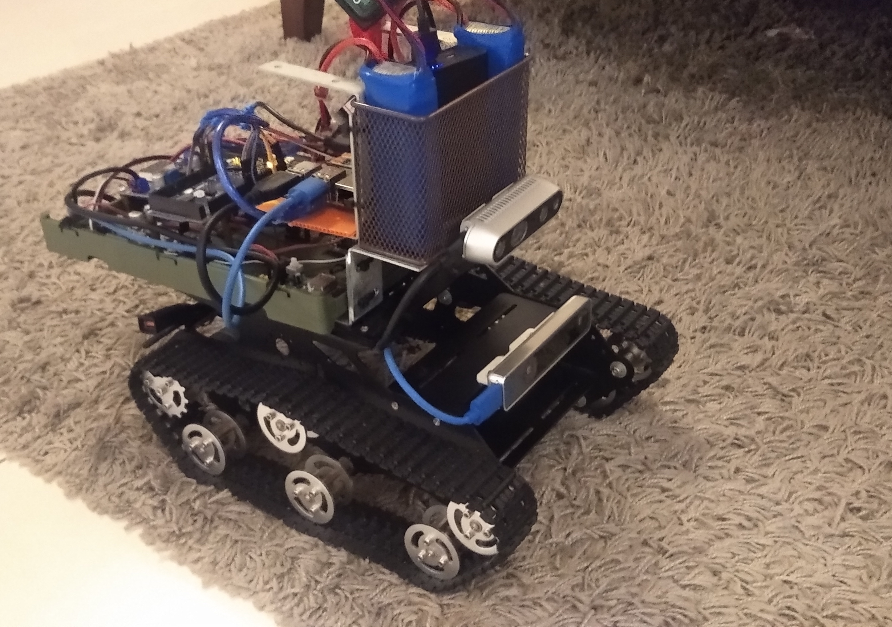

Tank Type Robot
Tank type of drone that uses SLAM to maneuver, equipped with a stereo camera and RGB-D camera.
Project Overview
Advanced tank-type robotic platform designed for autonomous navigation and mapping using SLAM (Simultaneous Localization and Mapping) technology. The robot is equipped with multiple sensors including stereo cameras and RGB-D cameras for comprehensive environmental perception.
Technical Specifications
Key Features
- SLAM Navigation: Advanced simultaneous localization and mapping capabilities
- Stereo Camera System: Dual camera setup for depth perception
- RGB-D Camera: Color and depth sensing for comprehensive environment understanding
- Tank Drive System: Robust tracked locomotion for various terrains
- Autonomous Operation: Self-navigating capabilities with obstacle avoidance